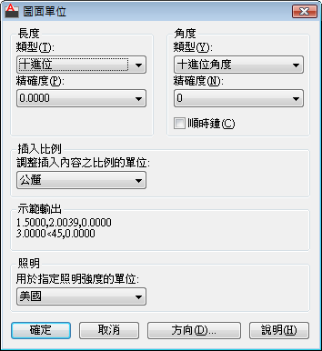

插入比例說明：
控制插入目前圖面中的圖塊和圖面的測量單位。如果圖塊或圖面建立時使用的單位與該選項指定的單位不同，則在插入這些圖塊或圖面時，將對它們按比例調整比例。插入比率是原始圖塊或圖面使用的單位與目標圖面使用的單位之比。如果插入圖塊時不按指定單位調整比例，請選取「無單位」。
注意事項：當來源圖塊或目標圖面中的任意一個的「插入比例」設為「無單位」時，均將使用「選項」對話方塊「使用者偏好」頁籤中的「原始內容單位」與「目標圖面單位」設定。